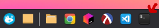
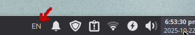
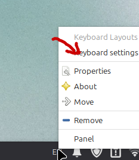
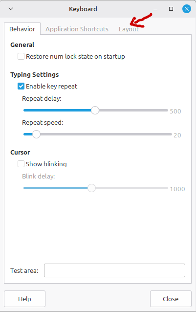
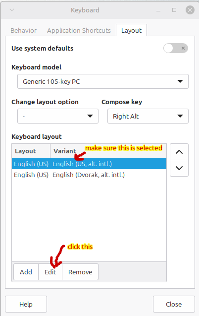
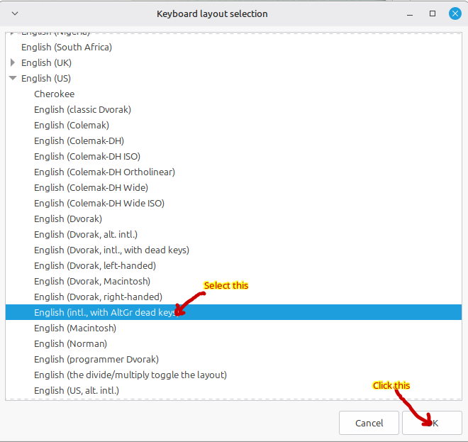
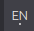
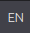

Your account name is the first letter of your (official) first name, up to seven letters of your last name, and the last two digits of your graduation year–all lower case, no spaces.
For example, if you are
John Smith
class of 2032
your login name would be
jsmith32
The same name and password will work on any computer in the lab.
You can’t reset your password, except by asking me to let you do it. (It’s a long story and related to the fact that if you change your password on the computer at your desk, it doesn’t make it back to the main computer that everything runs from. I’m going to try to fix that, but it’s not a super-high priority.)
If you log out or shut down the computer without exiting Chrome, you leave a file behind saying that you’re still running Chrome. When that happens, when you click to open Chrome, nothing happens.
To fix this, open the Terminal

and type
fix-chrome
and hit enter. If you don’t see an error message, you should now be able to open Chrome.
I picked the wrong keyboard to make the default. If you don’t change it, when you try to type quotation marks ", you’ll instead get a German umlaut ¨, which is not what you want.
To fix this, right click on the keyboard setting in the bottom right of the screen. It’s the EN spot.

When you click this, you should see a menu, where you can click Keyboard settings.

After you click this, you’ll be in the Keyboard settings. Once you’re there, click on the Layout tab.

The problem is the English (US, alt. intl.) variant, which gives you grief when you try to type double-quotes. Make sure it’s selected and click the Edit button.

This will open the Keyboard layout selection window. Make it bigger and find English US and then underneath it select English (intl. with AltGr dead keys) and click the OK button.

Close the Keyboard settings. And now you should be able to type quotes. Open up DrRacket and give it a try. If it didn’t work, let me know and I’ll take a look. This keyboard makes it easy to type all kinds of cool symbols. See the section on Typing Cool Symbols below for more information.
If you get the wrong characters when you type, you probably accidentally selected the Dvorak keyboard. It’s what I use to type, and if I have to sit down and type stuff on your computer, it’s easy for me.
Look at the EN spot in the lower right corner of the screen. If it has a dot under it, click it once to get rid of the dot and you’ll be back to a Qwerty keyboard.
Dvorak:

Qwerty:
Fun fact: If you press the Caps Lock key, you can see that it’s on because a line will appear above the EN.
Now that you fixed the keyboard I messed up, you can international characters and other symbols really easily. The right Alt key is used to tell the computer what to add to the next character. For example, if you take Spanish, you can create cool characters like this:
right + Alt + ', then a vowel, will give you that vowel with an accent. á é í ó ú Á É Í Ó Ú.
right + Alt + ~, followed by an \screen{n} will give you ñ Ñ.